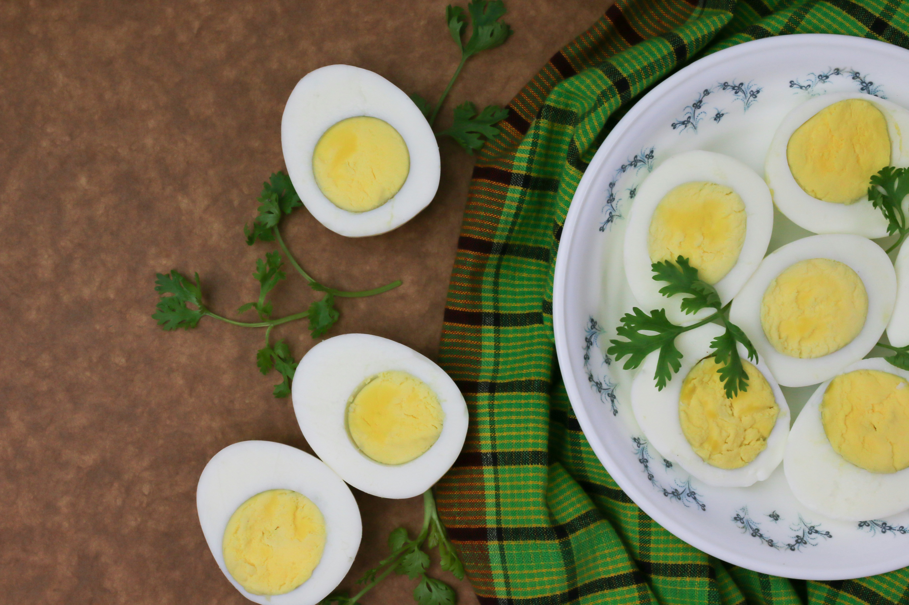

Home
Boiled Egg

Description
Boiling an egg may seem like the easiest task, but achieveing the perfect consistency is an art form. This recipe focuses on making the perfect hard-boiled egg with the creamy yellow yolk.
This is perfect as a simple breakfast side or for use in a salad. These eggs are easy to make and easy to peel!
Ingredients
- Eggs
- Water(enough to cover the eggs)
- A pinch of salt
- A bowl of cold water for cooling
Steps
- Place your eggs at the bottom of the pot or kettle.
- Fill the vessel until the eggs are covered at least an inch
- Place the vessel on the stove
- Let the eggs boil for 9 to 12 minutes depending on how firm you want the yolk to be.
- Remove the eggs and place them in a bowl of cold water before peeling.